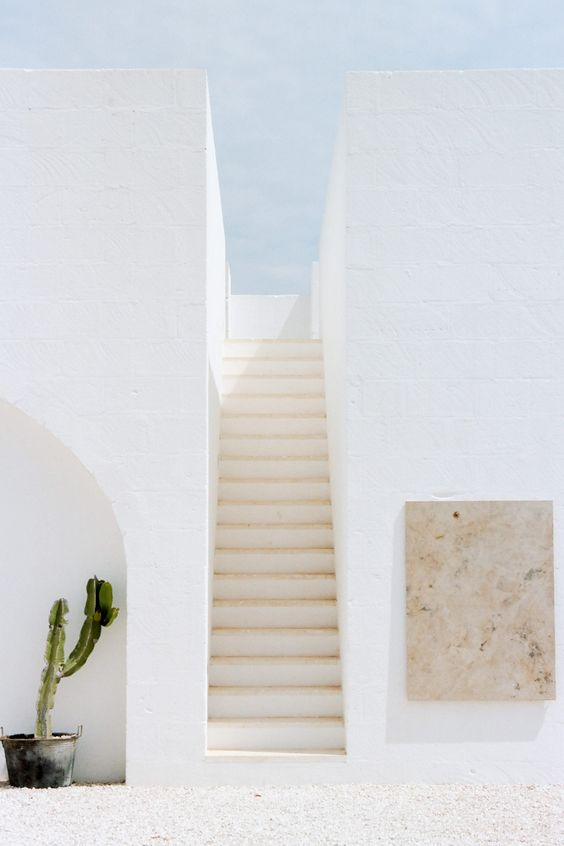
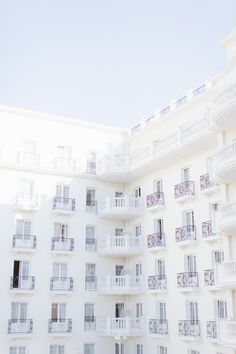
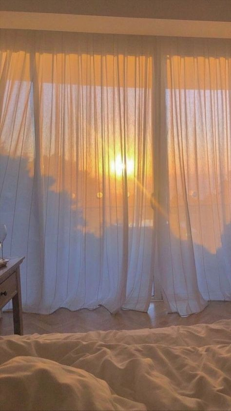
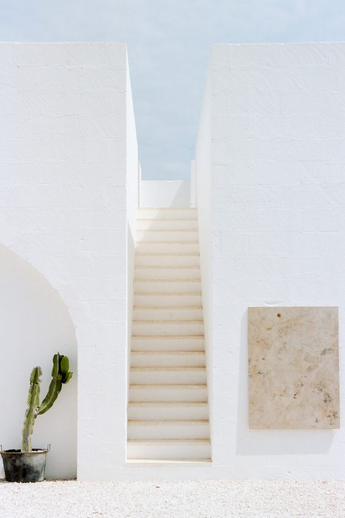
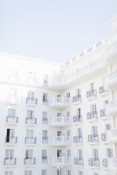
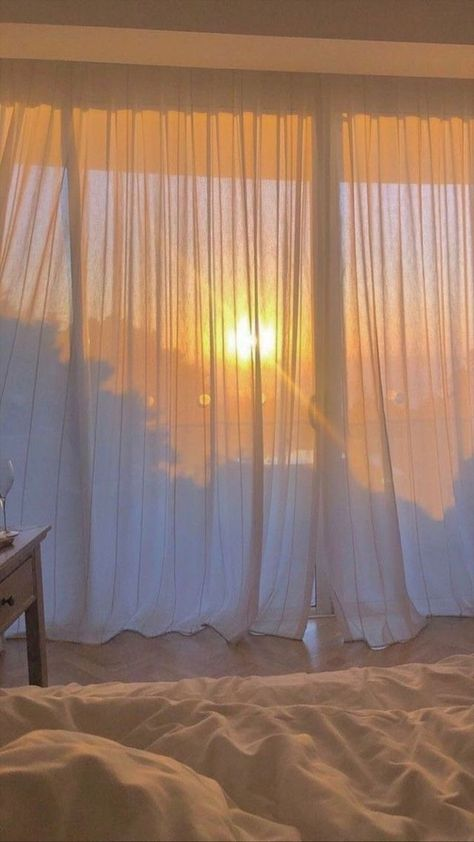

PHOTOGRAPHY
Capturing places or moments that highlight that fresh, new feeling aligns with the lifestyle of a minimalist. Just like getting into a brand new car for the first time, that smell, touch, and feeling are the same senses you feel when looking or taking these photographs. Remembering that clean moment is refreshing and cleansing to the mind.
Below you will find photographs that bring me to a state of serenity. Having a collection of moments and places that radiate calm and beautiful energy can alter your perspective and enhance your mood. Especially in difficult times like today, we forget about the fascinating beauty around our world. These documentations elicit tranquility, happiness, and harmony.
Minimalistic Photographs

 




